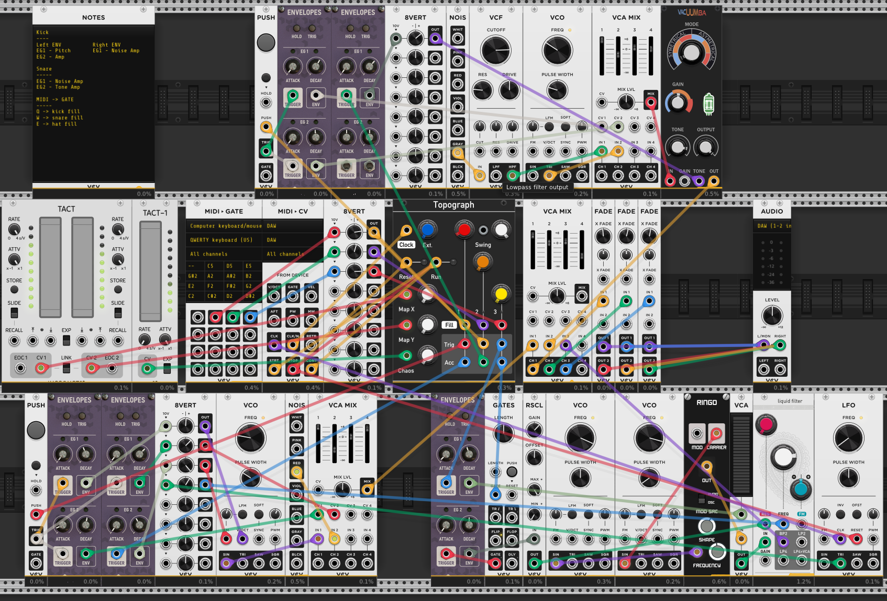
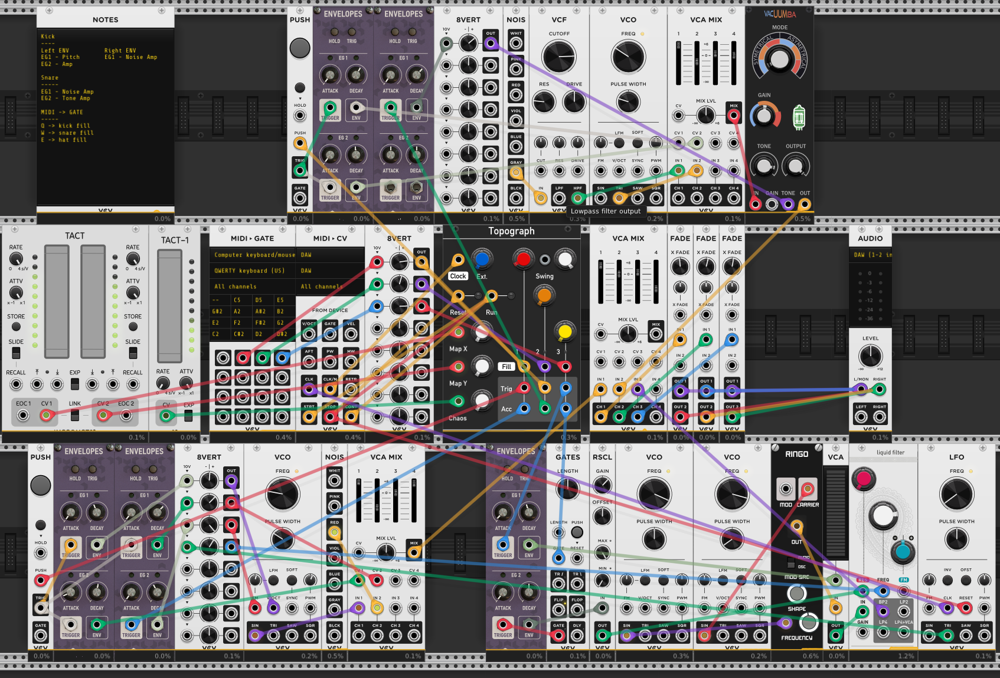

Notes
This is my most ambitious attempt so far to make "a song" with VCV Rack Pro. I started with the drum sounds, first exploring and then abandoning a couple of modules that contain (presumably) samples of various drum sounds in favor of synthesizing them from scratch. That ended up being a pretty fun and rewarding approach, and maybe aside from the "hi hat" sound that ended up more like a wood block or something, I think the drums sound pretty decent.
I used a great module from Valley Audio called Topograph to generate the sequences. It's a clone of Mutable Instruments HW module called "Grids" that allows you to navigate through an X-Y "coordinate system" of drum sequences while adjusting the density of triggers for each of three voices and adding some randomness via a "Chaos" knob. I used the Impromptu Tact controllers to controller X/Y/Chaos; those have a Rate parameter that will transition gradually between values. That ended up being a good approach for slowly evolving the drum sequence and short-circuiting my tendency to overthink everything and force it into a strict grid (which always makes everything end up having a simple pop song structure when I try it.)
I used the Substation modules from Slime Child Audio again for the synth. It's really fun and sounds great. I think I know what it's capable of now, and I'll probably branch out and try something different next time.
I went down a long rabbit hole trying to automate the parameters for the VCV Rack patches in Ableton. I eventually figured out (with Claude's help) how to assign them via "macros" in Live, which basically makes any module parameter available for automation, but I kept running into the same old problems... too much fussiness, too much focus on repetition and structure, not enough creativity and not enough fun. I ended up just improvising a simple composition by twiddling knobs in various windows. It was a useful learning experience, though, and I'll keep trying to figure out a compositional process that works for me inside Ableton.